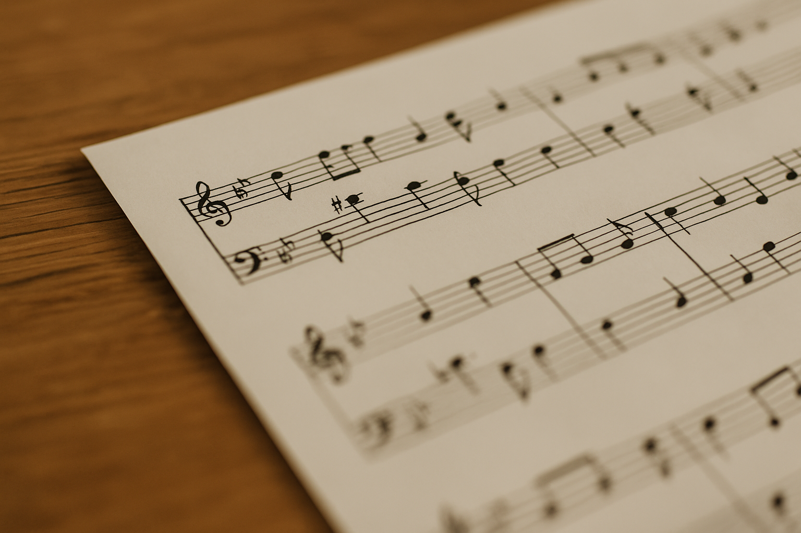
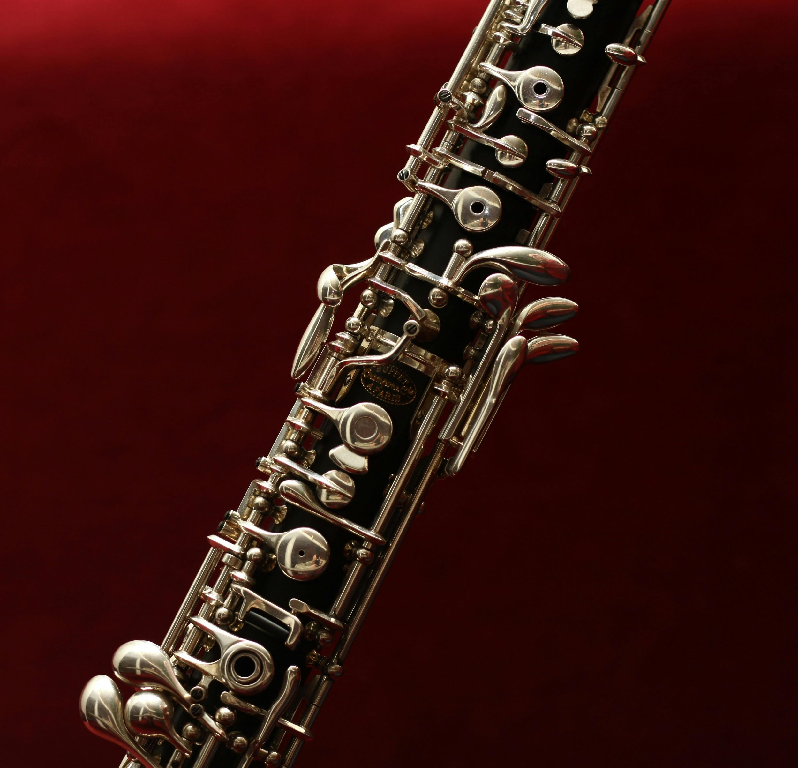

Resources for Members
Everything you need to get started, keep learning, and feel confident at rehearsal.
New to Band? Start Here Already Playing? Jump to Tools
Start Here
What to Bring to Every Rehearsal
To make the most of each session, please bring:
Your instrument (in good working order)
Music stand
Pencil for marking your music
Folder or binder with printed music
Your fingering chart or quick reference guide
Atuner app on your phone (many also include a metronome)
A water bottle — staying hydrated helps with focus and tone
Rehearsal Checklist
A few quick reminders to help each rehearsal run smoothly:
Tune up — we’ll guide you you through it if you’re unsure
Find your section — sit near others who play your instrument family.
Warm up quietly as others get settled.
Keep a pencil handy to mark music notes or changes.
Ask questions — there are no “silly” one here.
Listen and encourage your neighbors — we all learn together!
Most importantly, relax and enjoy the process. Progress, not perfection is our goal.
Sit with your instrument family if unsure
Ask questions — there are no “silly” ones here
Our Session Rhythm (Quick Summary)
Open Door Band meets in 11-week sessions with a 2-week break before the next session begins. This quarterly rhythm keeps things flexible and easy to join at any time of year.
Each rehearsal is 2.5 hours long, with a simple, flexible structure:
First Hour — Open Learning & Support: This portion of the rehearsal is designed to meet you where you are.
You can use this time to:
Learn or review music reading basics
Ask questions about your music
Get help with your instrument
Try a new instrument (with advance notice)
Practice at your own pace
There’s no set agenda—just support, guidance, and space to grow.
Transition Time — Setup & Break: A short break to stretch, chat, and get set up for ensemble playing.
Final 70 Minutes — Full Ensemble Rehearsal: We come together to play as a group, working on simple, tuneful music in a supportive environment.
The 11th rehearsal is a relaxed showcase rehearsal for family and friends — no tickets, no pressure, just music.
Rehearsals are held Mondays at Olympia Recreation Center. Please see our Calendar page for exact days and times.
Where We Rehearse
Rehearsals are held Mondays at Olympia Recreation Center. Current details are always available on our Calendar.
Guests are warmly welcome to sit in, listen, and see what we’re all about. You’ll quickly sense our relaxed, supportive atmosphere — and maybe even feel inspired to join us!
Gear & Buying Tips
Buying or choosing gear can feel overwhelming — here’s the simple version. If you’re unsure, ask before you buy; we’re always happy to help!
Basic gear to own
A reliable instrument (renting is a great option for beginners)
A music stand
A cleaning or maintenance kit for your instrument
A soft cloth and valve/slide/key oil as appropriate
A binder or folder for your printed music
Nice-to-have
Clip-on or app tuner
Metronome (or a combined tuner/metronome app)
Digital option: iPad + ForScore + Apple Pencil + foot pedal for turning pages
Portable stand light (if you’re using printed music)
Local help
We’re happy to connect you with trusted music stores in the area for supplies, repairs, and rentals.

Practice & Learning Tools
Whether you’re brand new or brushing off old skills, these tools will help you build confidence between rehearsals.
Music Theory & Reading
Duolingo — this gold standard language learning app has a fantastic path for learning to read music
MusicTheory.net — simple lessons and interactive exercises
Teoria.com — ear training and note-reading practice
Quizlet — flashcards for rhythm, not names, and key signatures
Apps for Musicians
TonalEnergy — tuner and metronome in one
Cleartune — east-to-use tuner for all instruments
ForScore (iPad) — digital sheet music reader for organizing your digital music
Practice Tips
Aim for 10-20 minutes of focused practice a few times a week — short and consistent is better than long and rare.
Review your band music before each session and note tricky spots to ask about in rehearsal.
Play along with recordings or YouTube videos to strengthen rhythm and tone.
Celebrate small wins — every bit of progress counts!
Need help choosing what to focus on? Bring your questions to rehearsal — we’ll work through them together.
Music Library & Downloads
This section gives members quick access to all rehearsal materials in one place — whether they’re practicing at home or, catching up after an absence, or reviewing notes.
Music Downloads
All current music will be available digitally through our shared Google Drive folder.
You’ll find the latest folder for the current session along with past session archived for reference. Tip: Please download PDFs to your own device before rehearsal — Wi-Fi and cell service can be unpredictable in some rooms.
Access the Music LibrarySession Notes
After each rehearsal, a short recap highlights key concepts covered during pre-rehearsal learning sessions, practice notes on on the week’s music, and next week’s goals for the next rehearsal.
Read the Session NotesFingering Charts (Free External Links)
We use trusted, freely-available fingering charts so you always have access to accurate diagrams, even on your device. Click the links below and save the ones you need.
Tomplay.com — flute, clarinet, oboe, saxophone, and trumpet
BandTek.com — flute, clarinet, oboe, bassoon, saxophone, trumpet, euphonium, French horn, trombone, and tuba
If a link becomes broken, let us know and we’ll locate a replacement.